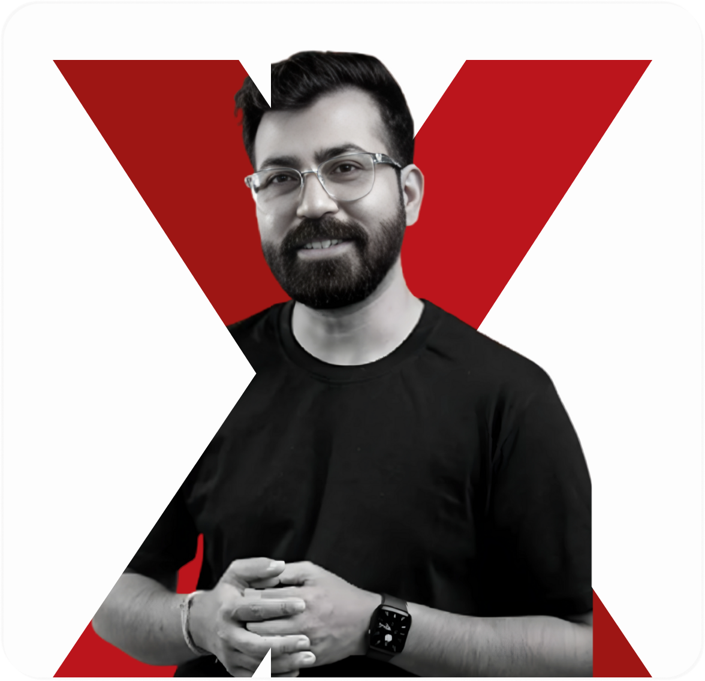
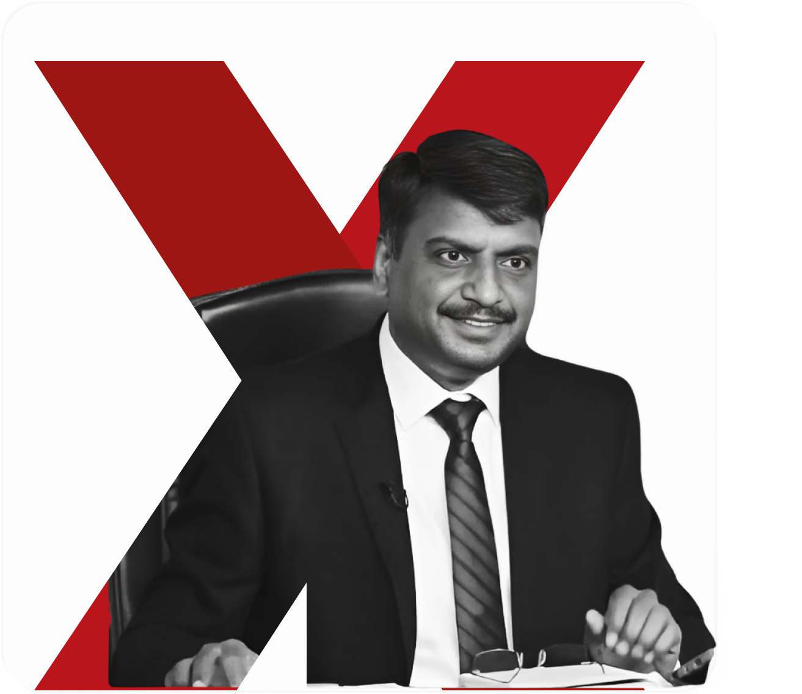
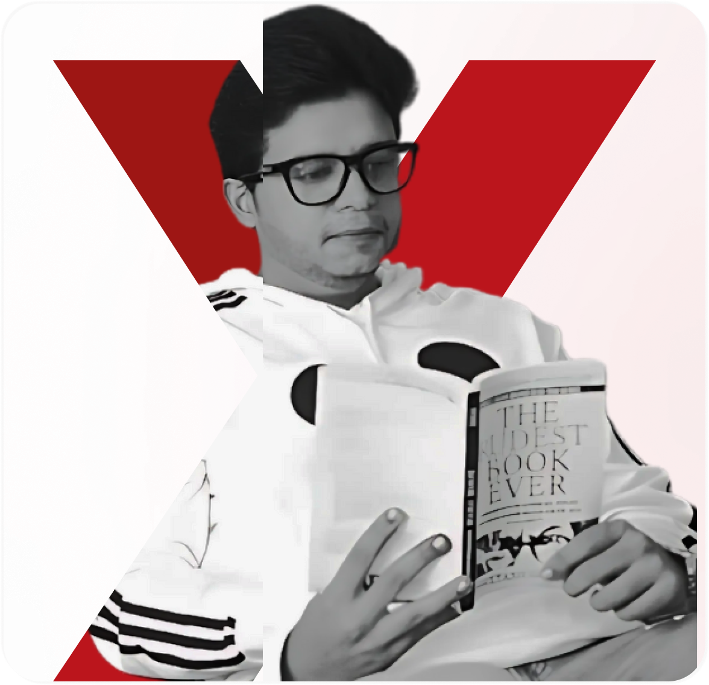
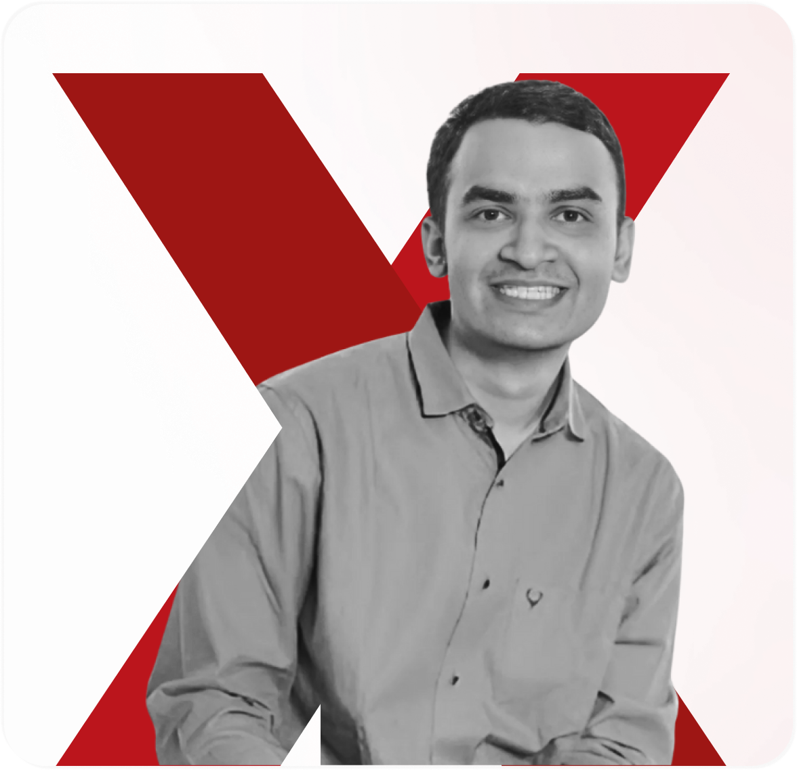
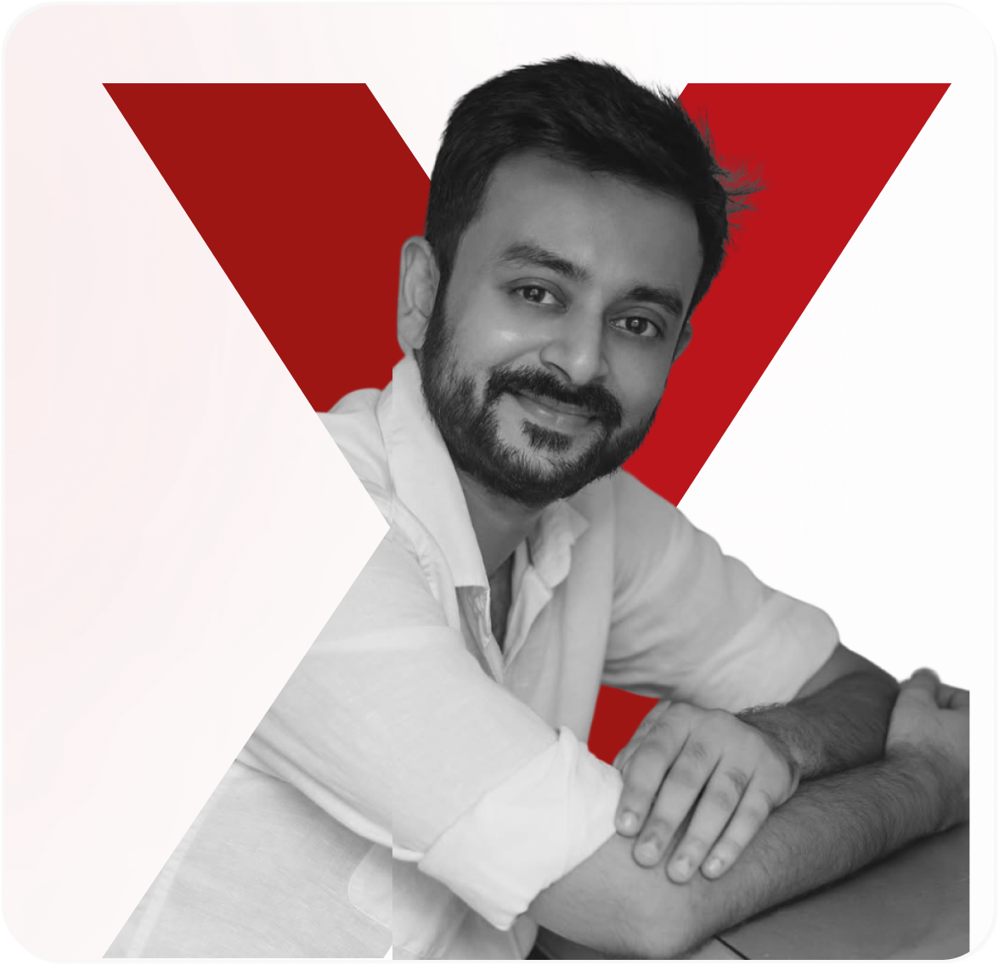

Past Edition
TEDxMITWPU 2023
Flip the Switch
Theme: An epiphany, a moment of transformation– "Flip The Switch" was about embracing change, taking risks, and rewriting one's path.

Past Speakers
Ashish Chanchlani (Youtuber & Content creator)
- Spoke about his evolution from a teacher to a digital education leader.
- Showcased how embracing online platforms transformed learning.
- Inspired students to take charge of their education.

Guar Gopal Das (Motivational speaker & Monk)
- Discussed governance, education, and societal transformation.
- Emphasized the role of knowledge in shaping policy.
- Urged young minds to participate in civic change.

Ashish Choudhary (Commerce Baba) (Educator & Influencer)
- Spoke about his evolution from a teacher to a digital education leader.
- Showcased how embracing online platforms transformed learning.
- Inspired students to take charge of their education.

Dr Vijender Singh Chauhan (Expert in Polity & Governance)
- Discussed governance, education, and societal transformation.
- Emphasized the role of knowledge in shaping policy.
- Urged young minds to participate in civic change.

Pratishtha Thakur Haritwal (Taxation Officer, Ex-IT Professional)
- Spoke about her career shift from IT to public service.
- Discussed personal reinvention and following one's calling.
- Showed how resilience leads to meaningful impact.

Malik Gilani (Entrepreneur, Digital Services & Media)
- Shared insights on building businesses in the digital era.
- Encouraged taking risks and adapting to technological shifts.
- Showcased the impact of digital transformation on industries.

Ratan Lal Dangi, IPS (Inspector General of Police, Raipur)
- Reflected on social initiatives and mentoring youth.
- Highlighted the importance of leadership in public service.
- Inspired change-makers to take responsibility for society.

Yash Lahoti (Founder, Women's CricZone & Women's Sportszone)
- Advocated for better representation of women in sports.
- Showcased how the media can shape narratives.
- Encouraged breaking barriers in male-dominated fields.

Ajitesh Gupta (Actor & Theater Performer)
- Shared his journey in theatre and storytelling.
- Highlighted the power of expression in personal transformation.
- Encouraged embracing uncertainty to create impact.

Past Performers
Shashank Vishwakarma (Finger-Tutting Artist)
- Demonstrated how creativity fuels self-discovery.
- Showed how unconventional art forms can inspire change.
- Encouraged perseverance in passion-driven careers.

Palash Live (Musical Performance)
- Blended music with the theme of transformation.
- Created an immersive experience of energy and change.
- Reinforced the power of artistic expression.